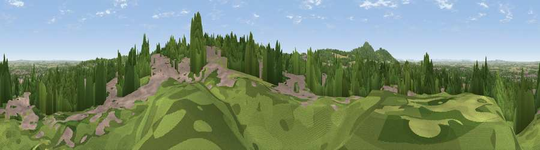

Viewpoint near Oakengates
#18977 in England · top 53% of its area beats it · near OakengatesThe view, rendered

A 360° render of this exact spot computed from the terrain model, tree cover and land cover — summer colours, afternoon light, calibrated against photographs of famous viewpoints. Real trees, hedges and buildings will differ in detail.
The panorama
Grey silhouette: terrain skyline in each direction (720 bearings, Earth curvature and refraction included). Dashed green: skyline with trees (+15 m) and buildings (+8 m) as obstacles. Blue strip: how far the ground is visible on each bearing.
Where the view opens
Wedge length = distance to the farthest visible ground on that bearing (vegetation-aware). Rings at 10, 25 and 50 km.
What fills the view
52% woodland · 34% built-up · 9% grassland · 4% cropland
Angular shares of the visible panorama (visual magnitude), not map area. Landscape diversity 0.48 (0–1 Shannon).
Key numbers
More beautiful places nearby
The staircase of upgrades: each row has a higher view potential than everything closer. Driving times are estimates from straight-line distance, calibrated against real road routing — check an actual route before setting out.
| Place | Direction | Drive | Score |
|---|---|---|---|
| Ketley Bank | ESE · 1 km | ~4 min | 62.4 |
| Viewpoint near Little Wenlock | WSW · 4 km | ~8 min | 66.2 |
| The Ercall | WSW · 4 km | ~9 min | 79.4 |
| Viewpoint near Little Wenlock | WSW · 5 km | ~12 min | 84.2 |
| The Wrekin | WSW · 6 km | ~13 min | 85.0 |
| Viewpoint near Little Wenlock | WSW · 6 km | ~13 min | 86.6 |
| North Hill | S · 65 km | ~88 min | 86.8 |
| Worcestershire Beacon | S · 66 km | ~89 min | 87.1 |
52.69371, -2.47232 · source: screening · position refined by local search. Computed location — check access rights before visiting.